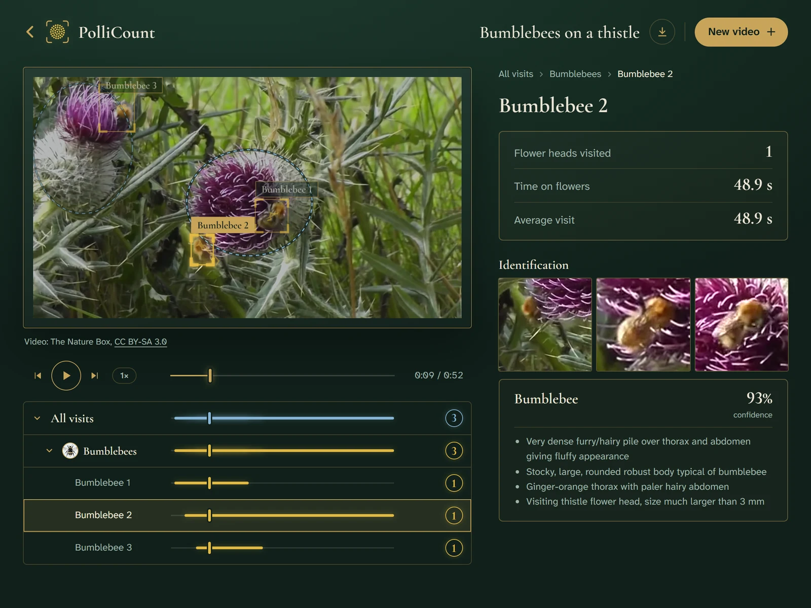

Count the pollinators on a flower patch.
Film a patch of flowers for a minute or two. PolliCount follows every insect that drops by, counts each landing and shows you who came to visit.
Start with your own video
- Up to 2 minutes
- Phone held still
- Or drop a file here
Try an example
Who you might meet
- Bumblebees

- Honeybees

- Solitary bees

- Wasps

- Hoverflies

- Other flies

- Butterflies and moths

- Beetles

- Small insects

- Other insects

How it works
- FilmPoint your phone at a patch of flowers and keep it still while insects come and go.
- Watch it countEvery insect is followed on screen, and each landing on a flower counts as a visit.
- Keep the recordSee who came to which flower, then download the counts for your survey.
See it in action
2:42 demo on YouTube. Open it on YouTube
Why it matters
- 75%of the world's leading food crops benefit from pollinating animals.IPBES, 2016
- 10 minis how long a volunteer watches one flower patch today, counting each insect by eye.FIT Count, UK Pollinator Monitoring Scheme
- 1 videois enough with PolliCount: film the patch, and the counting and naming of each visitor are done for you.
Today vs PolliCount
Today, by eye
- Someone watches the patch for 10 minutes, live or on a recording
- They must tell a hoverfly from a bee at a glance
- Each insect is written down by hand as it lands
- Only totals remain: when and where each visit happened is lost
With PolliCount
- Film the patch, and the video is counted for you
- Each visitor is sorted into its group, with the clues that gave it away
- Every landing is logged: who, on which flower, and when
- Each count leads to its moment in the video, to check it in one click
What you get

- Every visit on a timelineWhen each insect landed and how long it stayed, per group and per insect.
- Who cameEach visitor sorted into the ten FIT Count groups, with close-ups and the clues that gave it away.
- The insect in the spotlightPick one in the list and it stands out on the video.
- Data you can keepDownload the counts for your survey.
What powers it
SAM 3.1follows the insects and flowers, frame by frame.
Muse Sparktells which group each visitor belongs to, and names the plant when needed.
Tested on annotated videos of honeybees filmed from afar (Monash University dataset). The limits are listed openly in the project notes.